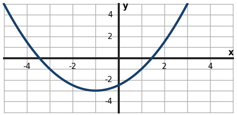
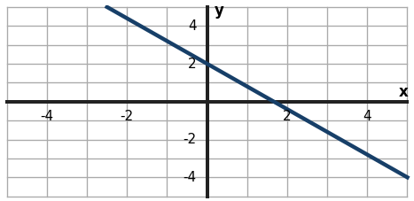
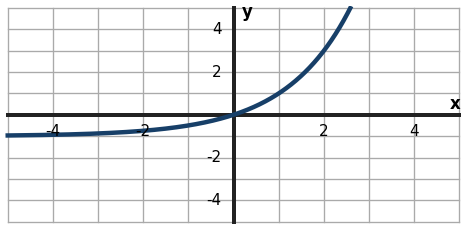
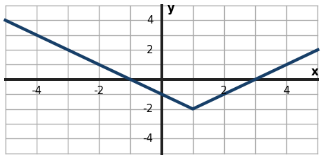
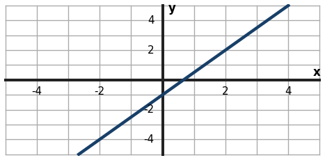
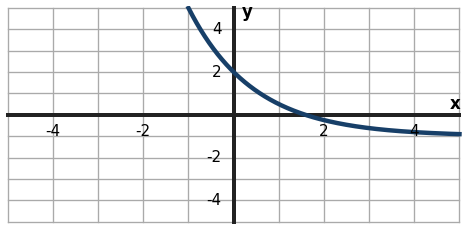
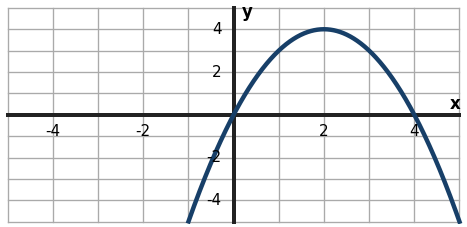
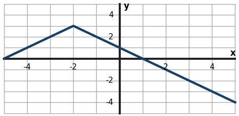

Linear · Quadratic · Exponential · Absolute Value
| Family | Tables | Graphs | Equations | Contexts |
|---|---|---|---|---|
| Linear | T2, T5 | G2, G5 | E2, E5 | C2, C7 |
| Quadratic | T4, T6 | G1, G7 | E4, E6 | C4, C8 |
| Exponential | T1, T7 | G3, G6 | E1, E7 | C1, C5 |
| Absolute Value | T3, T8 | G4, G8 | E3, E8 | C3, C6 |
8 scrambled tables · 2 of each function family
| x | y |
|---|---|
| -1 | 1.5 |
| 0 | 3 |
| 1 | 6 |
| 2 | 12 |
| x | y |
|---|---|
| -2 | -3 |
| -1 | -1 |
| 0 | 1 |
| 1 | 3 |
| x | y |
|---|---|
| -2 | 0 |
| -1 | -1 |
| 0 | -2 |
| 1 | -1 |
| 2 | 0 |
| x | y |
|---|---|
| -2 | 3 |
| -1 | 0 |
| 0 | -1 |
| 1 | 0 |
| 2 | 3 |
| x | y |
|---|---|
| -1 | 7 |
| 0 | 4 |
| 1 | 1 |
| 2 | -2 |
| x | y |
|---|---|
| -1 | 6 |
| 0 | 3 |
| 1 | 2 |
| 2 | 3 |
| 3 | 6 |
| x | y |
|---|---|
| 0 | 8 |
| 1 | 4 |
| 2 | 2 |
| 3 | 1 |
| x | y |
|---|---|
| -3 | 5 |
| -2 | 3 |
| -1 | 1 |
| 0 | 3 |
| 1 | 5 |
8 scrambled graphs · 2 of each function family








8 scrambled equations · 2 of each function family
8 scrambled situations · 2 of each function family
A bacteria culture begins with 200 bacteria. The number of bacteria doubles every hour.
A taxi charges a $4 starting fee plus $2.50 for every mile traveled.
A thermostat is set to 72°F. A display reports how many degrees the room temperature is away from 72°F.
A square garden has side length x + 2 feet. Its area changes as x changes.
A car is worth $24,000 today and loses 15% of its value each year.
A hiker walks along a straight trail. A marker reports the hiker’s distance from a campsite at mile 5, no matter which side of the campsite the hiker is on.
A water tank contains 900 gallons and drains at a constant rate of 30 gallons per minute.
A ball is thrown upward. Its height increases, reaches a highest point, and then decreases as time continues.